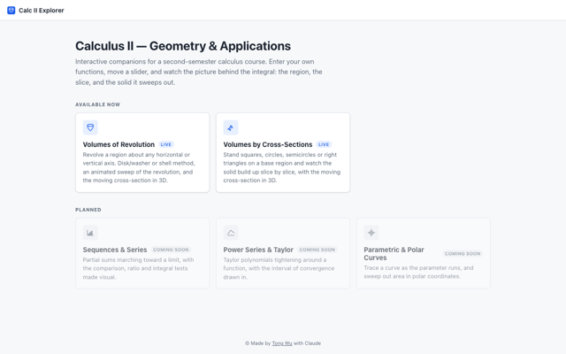
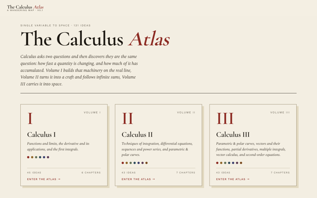
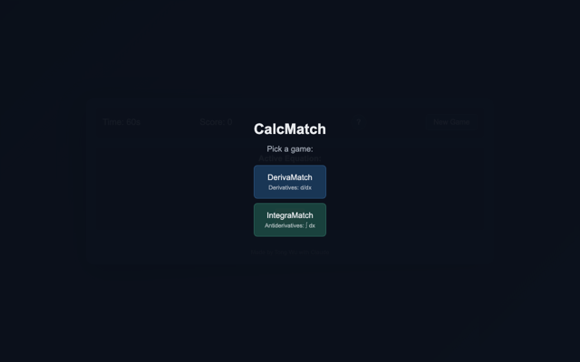

Teaching
Interactive Course Materials
Interactive web applications I built for Calculus II and used with my MAT 1223 students.
-

Calculus II — Geometry and Applications
Volumes of revolution about any horizontal or vertical axis by the disk, washer, or shell method, and volumes by cross-sections. Students enter their own functions and move a slider; the app animates the sweep and shows the moving cross-section in 3D. Used during class.
-

Conceptual maps covering 131 ideas across Calculus I, II, and III, organised into chapters, for placing a topic in context and reviewing prerequisite material.
-

Timed matching practice for derivative and antiderivative fluency, at three difficulty levels.
Built with AI assistance (Claude); see each site for details.
University of Texas at San Antonio — Instructor
- Summer 2026Calculus II
- Spring 2026Applied Linear Algebra; Numerical Analysis
- Fall 2025Applied Linear Algebra
- Spring 2025Differential Equations I
- Fall 2024Calculus III
- Spring 2024Calculus II
- Fall 2023Differential Equations I; Calculus II
- Summer 2023Calculus II
- Spring 2023Linear Algebra; Calculus II
- Fall 2022Linear Algebra; Calculus II
- Spring 2022Calculus II
- Fall 2021Calculus III
- Spring 2021Calculus II
- Fall 2020Calculus I
Prior Teaching (Tulane University & NC State University)
Tulane University — Instructor
- Spring 2020Scientific Computing I
- Spring 2019Scientific Computing I
- Spring 2014Calculus III
- Fall 2013Statistics for Business
NC State University — Instructor
- Spring 2018Calculus III
- Fall 2017Calculus I
- Spring 2017Calculus III
- Fall 2016Calculus II